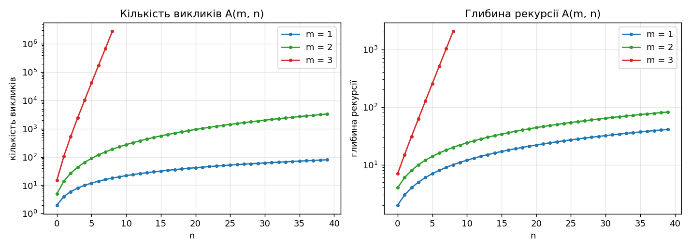
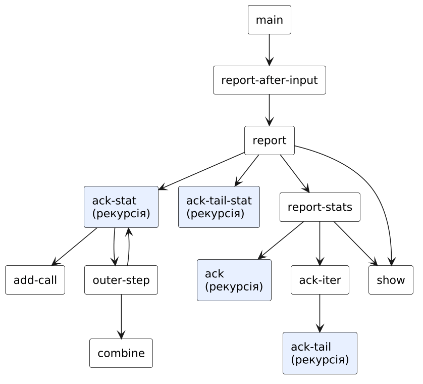
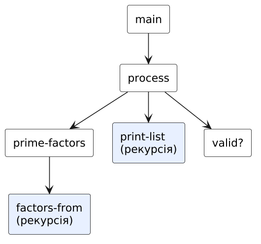

Використання рекурсії для організації повторювальних процесів
Варіант 3
Київ — 2026
Мета роботи
Мета подана за методичними вказівками до лабораторних занять з дисципліни «Функціональне програмування» (Київ, 2025).
Умова завдання
Варіант 3. Умова наведена з методичних вказівок.
Задача 1.1
3.1 Розробити програму мовою Scheme, яка обчислює значення функції Аккермана A(m, n), заданої рекурентним співвідношенням:
| n + 1, | якщо m = 0 |
| A(m − 1, 1), | якщо m > 0, n = 0 |
| A(m − 1, A(m, n − 1)), | якщо m > 0, n > 0 |
Завдання:
- реалізувати звичайну рекурсію для обчислення A(m, n);
- реалізувати хвостову рекурсію для обчислення A(m, n) із використанням акумуляторів;
- визначити глибину рекурсії для обох варіантів реалізації;
- реалізувати функцію, яка обчислює A(m, n) за допомогою ітеративного процесу (без рекурсії);
- порівняти ефективність рекурсивного та ітеративного підходів, визначивши: кількість викликів функцій; використання пам’яті (глибина рекурсії); час виконання (для великих m, n).
Контрольний тест: A(2, 2) = 7.
Задача 1.2
3.2 Ввести з клавіатури натуральне число n > 1. Використовуючи один із типів рекурсії (звичайна або хвостова рекурсія), вивести всі прості дільники цього числа в порядку неспадання з урахуванням кратності. Алгоритм повинен мати складність O(√n). Обґрунтувати вибір типу рекурсивного процесу.
Контрольний тест: введено число 18, отриманий результат 2 3 3.
Аналіз задачі та математичне забезпечення
Задача 1.1: Функція Аккермана
Математична модель
Функція Аккермана — найпростіший приклад всюди визначеної обчислюваної, але не примітивно-рекурсивної функції. Її значення швидко зростають: для малих m є замкнені формули, які використано для ітеративної реалізації:
| m | A(m, n) | Приклад |
|---|---|---|
| 0 | n + 1 | A(0, 5) = 6 |
| 1 | n + 2 | A(1, 7) = 9 |
| 2 | 2n + 3 | A(2, 2) = 7 (контрольний тест) |
| 3 | 2n+3 − 3 | A(3, 6) = 509 |
| 4 | 2↑↑(n+3) − 3 (вежа степенів двійки) | A(4, 1) = 65533 |
Завершення рекурсії гарантується лексикографічним спаданням пари (m, n): кожен виклик або зменшує m, або при тому ж m зменшує n.
Три реалізації
- Звичайна рекурсія
ack— пряма трансляція рекурентного співвідношення. Внутрішній виклик A(m, n − 1) не є хвостовим: після його повернення ще потрібно обчислити A(m − 1, ·), тому кожен виклик залишає кадр у стеку. Глибина стеку дорівнює максимальній довжині ланцюжка вкладених викликів. - Хвостова рекурсія з акумулятором
ack-tail. Відкладені обчислення «A(m − 1, ·)» зберігаються у списку-акумуляторіstack(це дефункціоналізована континуація): при m = 0 береться верхнє значення з акумулятора. Усі рекурсивні виклики — хвостові, тому керуючий стек не росте (глибина = 1), але пам’ять використовується під акумулятор — його довжина і є відповідником глибини звичайної рекурсії. - Ітеративний процес
ack-iter: для m ≤ 3 — прямі замкнені формули без рекурсії (O(1) арифметичних операцій; 2n+3 обчислюється вбудованимexpt); для m ≥ 4 замкнених формул у елементарних функціях немає, тому використовується цикл із явним стеком (хвостова версія).
Вимірювання глибини і кількості викликів
Щоб не використовувати змінних і присвоєнь, лічильники передаються параметрами. Функція ack-stat повертає список (значення, кількість викликів, максимальна глибина); ack-tail-stat — (значення, кількість кроків, максимальна довжина акумулятора). Результати для кількох пар (m, n):
| A(m, n) | Значення | Кількість викликів | Глибина рекурсії | Кроків (хвостова) | Макс. довжина стеку-акумулятора |
|---|---|---|---|---|---|
| A(0, 5) | 6 | 1 | 1 | 1 | 0 |
| A(1, 7) | 9 | 16 | 9 | 16 | 7 |
| A(2, 2) | 7 | 27 | 8 | 27 | 5 |
| A(2, 5) | 13 | 90 | 14 | 90 | 11 |
| A(3, 3) | 61 | 2432 | 63 | 2432 | 59 |
| A(3, 5) | 253 | 42438 | 255 | 42438 | 251 |
| A(3, 6) | 509 | 172233 | 511 | 172233 | 507 |
| A(3, 8) | 2045 | 2785999 | 2047 | 2785999 | 2043 |
| A(4, 1) | 65533 | 2862984010 | 65536 | 2862984010 | 65531 |
Кількість викликів збігається з кількістю кроків хвостової версії — алгоритм той самий, змінюється лише спосіб зберігання «відкладеної роботи»: у стеку викликів (глибина) або в акумуляторі (довжина списку).

Порівняння ефективності (час виконання)
| A(m, n) | Значення | Звичайна, мс | Хвостова, мс | Ітеративна, мс |
|---|---|---|---|---|
| A(2, 300) | 603 | 1.278 | 1.379 | 0.0001 |
| A(3, 6) | 509 | 1.153 | 1.302 | 0.0003333 |
| A(3, 8) | 2045 | 19.4 | 21.01 | 0.002 |
| A(4, 1) | 65533 | 2.14e+04 | 1.916e+04 | 1.898e+04 |
Середній час за кілька повторів, Guile 3.0.11 (компільований режим). Значення залежать від комп’ютера; важливі співвідношення.
Висновки: для m ≤ 3 ітеративна реалізація на порядки швидша (O(1) проти експоненційної кількості викликів); звичайна та хвостова рекурсії мають однакову кількість обчислювальних кроків і близький час — хвостова версія трохи програє через роботу зі списком-акумулятором, проте не вичерпує керуючий стек (для A(4, 1) звичайна рекурсія сягає глибини ≈ 65 тис. викликів). Для m ≥ 4 замкнених формул немає, тому всі підходи вимагають мільйонів кроків.
Задача 1.2: Прості дільники числа
Алгоритм
Пробне ділення на кандидатів d = 2, 3, 4, … Інваріант: перед перевіркою d усі прості множники, менші за d, уже вилучені з n. Тому перший дільник, який знайдено, — простий (якби d було складеним, його простий дільник менший за d уже вилучено). Три випадки на кожному кроці:
- n = 1 — працю завершено, список порожній;
- d² > n — залишок n простий (будь-який складений n має дільник ≤ √n), додаємо його й завершуємо;
- d | n — додаємо d, продовжуємо з n/d і тим самим d (кратність); інакше d ← d + 1.
Складність O(√n)
Значення d зростає не більше ніж до ⌊√n⌋ (для простого n — рівно до √n); кожне ділення зменшує n у ≥ 2 разів, тому всіх ділень не більше log₂n. Разом O(√n + log n) = O(√n). Для n = 109+7 виконується ≈ 31 600 ітерацій, для n = 600 851 475 143 — ≈ 6 857 кроків (лише до найбільшого дільника), що підтверджено запусками.
Вибір типу рекурсії
Обрано звичайну рекурсію для побудови списку: (cons d (factors-from (quotient n d) d)) дає дільники одразу в порядку неспадання, без зворотного перетворення списку (хвостова версія з акумулятором дала б список у зворотному порядку і вимагала б додаткового обертання). Глибина стеку обмежена кількістю простих множників з кратністю — не більше log₂n ≈ 40 для 64-бітних чисел, тобто переповнення неможливе. Довгі перебори кандидатів d виконуються хвостовим викликом (factors-from n (+ d 1)) і стек не збільшують. Таким чином, застосовано змішаний підхід: кожен рекурсивний виклик, де це можливо, — хвостовий; нехвостовий лише там, де це природно й безпечно.
HIPO-діаграма (схема виклику процедур)
Діаграма показує ієрархію викликів процедур (стрілка A → B означає, що A викликає B); блоки з рекурсією виділено. Допоміжні процедури введення даних (ask-…) для наочності опущено.
Задача 1.1: Функція Аккермана

| Процедура | Вхід (Input) | Обробка / вихід (Process → Output) |
|---|---|---|
main | Введення m, n | виклик report-after-input |
report | m, n | виведення результатів трьох реалізацій і перевірки збігу |
ack / ack-tail / ack-iter | m, n (+ stack) | значення A(m, n) |
ack-stat / ack-tail-stat | m, n, лічильники | список (значення, виклики, глибина / довжина стеку) |
compare, time-of | m, n, reps | середній час виконання (мс) |
Задача 1.2: Прості дільники числа

| Процедура | Вхід (Input) | Обробка / вихід (Process → Output) |
|---|---|---|
main | — | запит n, виклик process |
process / valid? | n | перевірка n > 1 та виведення |
prime-factors | n | список простих дільників |
factors-from | n, d | список дільників ≥ d |
print-list | список | виведення через пробіл |
Код
Код наведено текстом (не скріншотом). Файли можна завантажити та запустити в Dr.Racket (мова R5RS: Мова → Обрати мову → Other languages → R5RS) або в Guile.
Задача 1.1: Функція Аккермана
⬇ task1_ackermann.scm;; =====================================================================
;; ЛР1, варіант 3, задача 3.1. Функція Аккермана A(m, n)
;; A(0, n) = n + 1
;; A(m, 0) = A(m-1, 1) при m > 0
;; A(m, n) = A(m-1, A(m, n-1)) при m > 0, n > 0
;; Реалізації: 1) звичайна рекурсія; 2) хвостова рекурсія з акумулятором-стеком;
;; 3) ітеративний процес (константна глибина керуючого стеку).
;; Також: підрахунок викликів і глибини рекурсії та порівняння часу виконання.
;; Обмеження: без let / let* / set! / циклів — лише define, cond, if, lambda.
;; =====================================================================
;; ---------- 1. Звичайна рекурсія ----------
(define (ack m n)
(cond ((= m 0) (+ n 1))
((= n 0) (ack (- m 1) 1))
(else (ack (- m 1) (ack m (- n 1))))))
;; ---------- 2. Хвостова рекурсія ----------
;; Акумулятор stack зберігає «відкладені» значення m (замість стеку викликів).
(define (ack-tail m n stack)
(cond ((= m 0)
(if (null? stack)
(+ n 1)
(ack-tail (car stack) (+ n 1) (cdr stack))))
((= n 0) (ack-tail (- m 1) 1 stack))
(else (ack-tail m (- n 1) (cons (- m 1) stack)))))
;; ---------- 3. Ітеративний процес ----------
;; Для m <= 3 використовуються замкнені формули (без жодної рекурсії):
;; A(0,n)=n+1; A(1,n)=n+2; A(2,n)=2n+3; A(3,n)=2^(n+3)-3.
;; Для m >= 4 процес виконується хвостовим циклом із явним стеком.
(define (ack-iter m n)
(cond ((= m 0) (+ n 1))
((= m 1) (+ n 2))
((= m 2) (+ (* 2 n) 3))
((= m 3) (- (expt 2 (+ n 3)) 3))
(else (ack-tail m n '()))))
;; ---------- Статистика: кількість викликів і глибина рекурсії ----------
;; Результат — список (значення кількість-викликів максимальна-глибина)
(define (ack-stat m n d)
(cond ((= m 0) (list (+ n 1) 1 d))
((= n 0) (add-call (ack-stat (- m 1) 1 (+ d 1))))
(else (outer-step (ack-stat m (- n 1) (+ d 1)) m d))))
(define (add-call r) (list (car r) (+ 1 (cadr r)) (caddr r)))
(define (outer-step inner m d)
(combine inner (ack-stat (- m 1) (car inner) (+ d 1))))
(define (combine inner outer)
(list (car outer) (+ 1 (cadr inner) (cadr outer)) (max (caddr inner) (caddr outer))))
;; Те саме для хвостової версії: (значення кількість-кроків максимальна-довжина-стеку)
(define (ack-tail-stat m n stack len steps maxlen)
(cond ((= m 0)
(if (null? stack)
(list (+ n 1) (+ steps 1) maxlen)
(ack-tail-stat (car stack) (+ n 1) (cdr stack) (- len 1) (+ steps 1) maxlen)))
((= n 0) (ack-tail-stat (- m 1) 1 stack len (+ steps 1) maxlen))
(else (ack-tail-stat m (- n 1) (cons (- m 1) stack) (+ len 1) (+ steps 1) (max maxlen (+ len 1))))))
;; ---------- Вимірювання часу ----------
;; Викликає (f m n) reps разів і повертає середній час у мілісекундах.
(define (time-of f m n reps)
(/ (time-loop f m n reps (current-inexact-milliseconds)) reps))
(define (time-loop f m n reps start)
(if (= reps 0)
(- (current-inexact-milliseconds) start)
(begin (f m n) (time-loop f m n (- reps 1) start))))
(define (ack-tail0 m n) (ack-tail m n '()))
;; ---------- Інтерфейс ----------
(define (show label value) (display label) (display value) (newline))
(define (report m n)
(show "Вхідні дані: m = " m)
(show " n = " n)
(newline)
(report-stats m n (ack-stat m n 1) (ack-tail-stat m n '() 0 0 0)))
;; s = (значення викликів глибина) для звичайної рекурсії; t = (значення кроків довжина-стеку) для хвостової.
;; Статистика обчислюється один раз і передається параметрами (без повторних викликів).
(define (report-stats m n s t)
(display "1) Звичайна рекурсія")
(newline)
(show " A(m, n) = " (car s))
(show " кількість викликів = " (cadr s))
(show " глибина рекурсії = " (caddr s))
(display "2) Хвостова рекурсія (акумулятор — стек)")
(newline)
(show " A(m, n) = " (car t))
(show " кількість кроків = " (cadr t))
(display " глибина керуючого стеку = 1 (усі виклики хвостові)")
(newline)
(show " макс. довжина стеку-акумулятора = " (caddr t))
(display "3) Ітеративний процес")
(newline)
(show " A(m, n) = " (ack-iter m n))
(newline)
(show "Перевірка збігу результатів: "
(and (= (car s) (car t)) (= (car s) (ack-iter m n)) (= (car s) (ack m n)))))
(define (main)
(display "Функція Аккермана. Введіть m: ")
(ask-n (read)))
(define (ask-n m)
(display "Введіть n: ")
(report-after-input m (read)))
(define (report-after-input m n)
(newline)
(report m n))
;; Порівняння ефективності на великих значеннях
(define (compare m n reps)
(display "A(") (display m) (display ", ") (display n) (display ") результат = ")
(display (ack-iter m n)) (newline)
(show " звичайна рекурсія: час (мс) = " (time-of ack m n reps))
(show " хвостова рекурсія: час (мс) = " (time-of ack-tail0 m n reps))
(show " ітеративний процес: час (мс) = " (time-of ack-iter m n reps)))
Задача 1.2: Прості дільники числа
⬇ task2_prime_factors.scm;; =====================================================================
;; ЛР1, варіант 3, задача 3.2. Прості дільники натурального числа n > 1
;; у порядку неспадання з урахуванням кратності. Складність O(sqrt(n)).
;;
;; Ідея: перебираємо кандидатів d = 2, 3, 4, ... доки d*d <= n.
;; - якщо d ділить n, то d — простий дільник (усі менші дільники вже вилучені);
;; записуємо d і продовжуємо з n/d (той самий d — перевірка кратності);
;; - інакше збільшуємо d;
;; - якщо d*d > n, то залишок n > 1 — простий (останній, найбільший дільник).
;; Тип рекурсії: звичайна (cons після рекурсивного виклику) — результат одразу
;; утворюється в порядку неспадання, а глибина обмежена кількістю дільників
;; (<= log2 n); перебір кандидатів d виконується хвостовими викликами.
;; =====================================================================
(define (prime-factors n)
(factors-from n 2))
(define (factors-from n d)
(cond ((= n 1) '())
((> (* d d) n) (list n))
((= (remainder n d) 0) (cons d (factors-from (quotient n d) d)))
(else (factors-from n (+ d 1)))))
;; ---------- виведення списку через пробіл ----------
(define (print-list lst)
(cond ((null? lst) (newline))
((null? (cdr lst)) (display (car lst)) (newline))
(else (display (car lst)) (display " ") (print-list (cdr lst)))))
;; ---------- перевірка введеного n ----------
(define (valid? n)
(and (integer? n) (> n 1)))
(define (main)
(display "Введіть натуральне число n > 1: ")
(process (read)))
(define (process n)
(if (valid? n)
(print-list (prime-factors n))
(begin (display "Помилка: потрібне натуральне число n > 1") (newline))))
Скріншот роботи та результату
Знімки консолі відтворюють роботу програм: запуск виконано в інтерпретаторі Guile 3.0 (R5RS-сумісний); введені користувачем значення виділено зеленим. Для кожного запуску наведено умови та результат.
Задача 1.1: Функція Аккермана


A(2, 300) результат = 603
звичайна рекурсія: час (мс) = 1.2781500000000001
хвостова рекурсія: час (мс) = 1.3787499999999997
ітеративний процес: час (мс) = 9.999999999976694e-5
A(3, 6) результат = 509
звичайна рекурсія: час (мс) = 1.152666666666671
хвостова рекурсія: час (мс) = 1.301666666666667
ітеративний процес: час (мс) = 3.33333333330188e-4
A(3, 8) результат = 2045
звичайна рекурсія: час (мс) = 19.400000000000006
хвостова рекурсія: час (мс) = 21.013999999999996
ітеративний процес: час (мс) = 0.001999999999995339
A(4, 1) результат = 65533
звичайна рекурсія: час (мс) = 21404.422000000002
хвостова рекурсія: час (мс) = 19162.711000000003
ітеративний процес: час (мс) = 18984.344000000005
Задача 1.2: Прості дільники числа


Оцінка достовірності результату
Функція Аккермана: три реалізації проти Python
значення, кількість викликів, глибина, кроки хвостової версії та розмір стеку
| Вхідні дані | Результат програми | Еталон | |
|---|---|---|---|
| A(0,0) | 1/1/1, викл.=1, глиб.=1, кроків=1, стек=0 | 1, викл.=1, глиб.=1, кроків=1, стек=0 | ✓ |
| A(0,5) | 6/6/6, викл.=1, глиб.=1, кроків=1, стек=0 | 6, викл.=1, глиб.=1, кроків=1, стек=0 | ✓ |
| A(1,0) | 2/2/2, викл.=2, глиб.=2, кроків=2, стек=0 | 2, викл.=2, глиб.=2, кроків=2, стек=0 | ✓ |
| A(1,7) | 9/9/9, викл.=16, глиб.=9, кроків=16, стек=7 | 9, викл.=16, глиб.=9, кроків=16, стек=7 | ✓ |
| A(2,0) | 3/3/3, викл.=5, глиб.=4, кроків=5, стек=1 | 3, викл.=5, глиб.=4, кроків=5, стек=1 | ✓ |
| A(2,2) | 7/7/7, викл.=27, глиб.=8, кроків=27, стек=5 | 7, викл.=27, глиб.=8, кроків=27, стек=5 | ✓ |
| A(2,5) | 13/13/13, викл.=90, глиб.=14, кроків=90, стек=11 | 13, викл.=90, глиб.=14, кроків=90, стек=11 | ✓ |
| A(3,0) | 5/5/5, викл.=15, глиб.=7, кроків=15, стек=3 | 5, викл.=15, глиб.=7, кроків=15, стек=3 | ✓ |
| A(3,1) | 13/13/13, викл.=106, глиб.=15, кроків=106, стек=11 | 13, викл.=106, глиб.=15, кроків=106, стек=11 | ✓ |
| A(3,3) | 61/61/61, викл.=2432, глиб.=63, кроків=2432, стек=59 | 61, викл.=2432, глиб.=63, кроків=2432, стек=59 | ✓ |
| A(3,5) | 253/253/253, викл.=42438, глиб.=255, кроків=42438, стек=251 | 253, викл.=42438, глиб.=255, кроків=42438, стек=251 | ✓ |
| A(3,6) | 509/509/509, викл.=172233, глиб.=511, кроків=172233, стек=507 | 509, викл.=172233, глиб.=511, кроків=172233, стек=507 | ✓ |
12 / 12 збігів.
Прості дільники проти sympy.factorint
| Вхідні дані | Результат програми | Еталон | |
|---|---|---|---|
| 2 | 2 | 2 | ✓ |
| 3 | 3 | 3 | ✓ |
| 4 | 2 2 | 2 2 | ✓ |
| 6 | 2 3 | 2 3 | ✓ |
| 12 | 2 2 3 | 2 2 3 | ✓ |
| 18 | 2 3 3 | 2 3 3 | ✓ |
| 49 | 7 7 | 7 7 | ✓ |
| 84 | 2 2 3 7 | 2 2 3 7 | ✓ |
| 97 | 97 | 97 | ✓ |
| 100 | 2 2 5 5 | 2 2 5 5 | ✓ |
| 360 | 2 2 2 3 3 5 | 2 2 2 3 3 5 | ✓ |
| 1001 | 7 11 13 | 7 11 13 | ✓ |
| 65536 | 2 2 2 2 2 2 2 2 2 2 2 2 2 2 2 2 | 2 2 2 2 2 2 2 2 2 2 2 2 2 2 2 2 | ✓ |
| 99991 | 99991 | 99991 | ✓ |
| 123456 | 2 2 2 2 2 2 3 643 | 2 2 2 2 2 2 3 643 | ✓ |
| 999983 | 999983 | 999983 | ✓ |
| 1000000007 | 1000000007 | 1000000007 | ✓ |
| 600851475143 | 71 839 1471 6857 | 71 839 1471 6857 | ✓ |
| 1234567890 | 2 3 3 5 3607 3803 | 2 3 3 5 3607 3803 | ✓ |
19 / 19 збігів.
Перевірка коду інструментами штучного інтелекту (простота, Clean code)
Аналіз коду виконав ШІ-асистент Claude (Anthropic): прочитано кожну програму, перевірено її за критеріями чистого коду й за вимогами завдання, автоматично пораховано метрики та пошук заборонених конструкцій. Нижче — критерії, вимірювання й висновки; випадки, де за результатами перевірки код було змінено, позначені «знайдено й виправлено».
Критерії
| Критерій | Що перевірялось |
|---|---|
| Іменування | імена відображають зміст (дієслова для дій, іменники для даних) |
| Малі функції | одна процедура — одна відповідальність; довжина процедур |
| Відсутність побічних ефектів | немає set!, змінних стану; значення передаються параметрами |
| Відповідність обмеженням | заборонені конструкції (let, let*, letrec, do, while, for, loop) |
| Простота | немає дублювання обчислень, зайвих абстракцій; коментарі пояснюють «чому», а не «що» |
| Коректність і тестованість | чисті процедури можна перевірити окремо (див. розділ «Оцінка достовірності») |
Задача 1.1: Функція Аккермана
| Рядків | Рядків коду | Рядків коментарів | Процедур | Середня довжина | Максимальна довжина |
|---|---|---|---|---|---|
| 118 | 80 | 26 | 18 | 4.4 | 19 |
| let | let* | letrec | set! | do | while/for/loop |
|---|---|---|---|---|---|
| 0 | 0 | 0 | 0 | 0 | 0 |
Висновки перевірки
- Імена процедур описові (
ack,ack-tail,ack-iter,ack-stat); кожна процедура виконує одну дію; довгі формули розбито на допоміжні (add-call,outer-step,combine). - Автоматична перевірка показала відсутність заборонених конструкцій (let, let*, letrec, set!, do, while/for/loop).
- Знайдено й виправлено: початкова версія оголошувала значення через
defineусередині тіла процедури після виразів — це порушує стандарт R5RS; замінено передаванням значень параметрами (ask-n,report-after-input). - Знайдено й виправлено:
ack-statвикликалась двічі (окремо для кількості викликів і для глибини), що подвоювало обчислення для великих m, n; тепер статистика обчислюється один раз і передається параметрами (report-stats). - Зауваження: «ітеративний процес» для m ≥ 4 повторно використовує
ack-tail(елементарних замкнених формул немає) — це чесно зазначено в коментарі до коду.
Задача 1.2: Прості дільники числа
| Рядків | Рядків коду | Рядків коментарів | Процедур | Середня довжина | Максимальна довжина |
|---|---|---|---|---|---|
| 42 | 20 | 15 | 6 | 3.3 | 5 |
| let | let* | letrec | set! | do | while/for/loop |
|---|---|---|---|---|---|
| 0 | 0 | 0 | 0 | 0 | 0 |
Висновки перевірки
- Процедура
prime-factors— один рядок, уся логіка вfactors-fromз трьома вичерпними гілкамиcond; коментар пояснює інваріант алгоритму. - Валідація входу відокремлена (
valid?), виведення відокремлене (print-list) — чисті обчислення не змішані з вводом-виведенням. - Заборонених конструкцій немає; стан не змінюється.
- Зауваження: перебір d із кроком 1 можна пришвидшити (2, потім лише непарні, або колесо 6k±1) — це зменшило б константу в 2–3 рази, але ускладнило б код, тому для лабораторної збережено простий варіант.
Примітка: метрики розраховано автоматично; змістовні висновки — експертна оцінка асистента. Перевірку слід розглядати як допоміжну: остаточну відповідальність за код несе автор.
Висновок
У лабораторній роботі виконано обидві задачі варіанта 3. Функцію Аккермана реалізовано трьома способами: звичайною рекурсією, хвостовою рекурсією з акумулятором-стеком та ітеративним процесом; виміряно кількість викликів, глибину рекурсії й час виконання. Показано, що хвостова рекурсія замінює глибину керуючого стеку довжиною списку-акумулятора, а для малих m ітеративне обчислення за замкненими формулами на кілька порядків ефективніше. Прості дільники числа знайдено за O(√n) пробним діленням із коректною обробкою кратності. Усі результати перевірено 31 незалежним порівнянням із Python (sympy.factorint та власна реалізація обліку викликів) — розбіжностей немає; контрольні тести A(2, 2) = 7 та 18 → 2 3 3 пройдено.